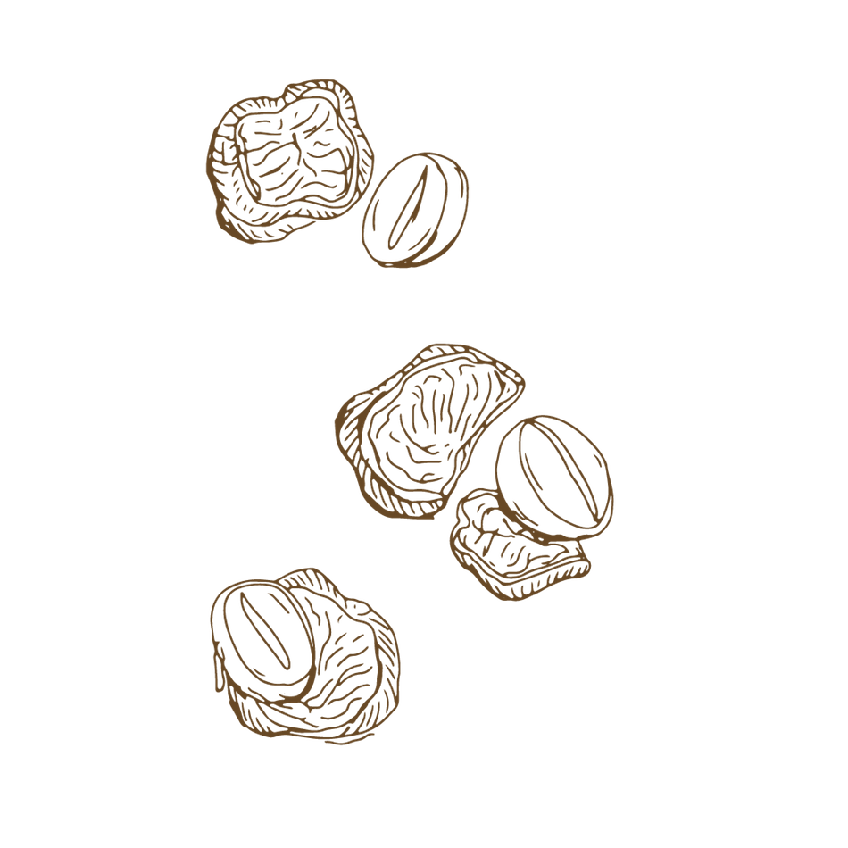

PROCESSING
The next step in the coffee production process is getting the beans out
of the fruit by either dry processing, which involves
letting them dry in the sun so that the bean separates from the fruit (old fashioned way), or wet processing which involves washing and
fermenting the berries so that all the pulp from the fruit is removed from the beans. After processing,
we are left with what is known as green coffee beans!